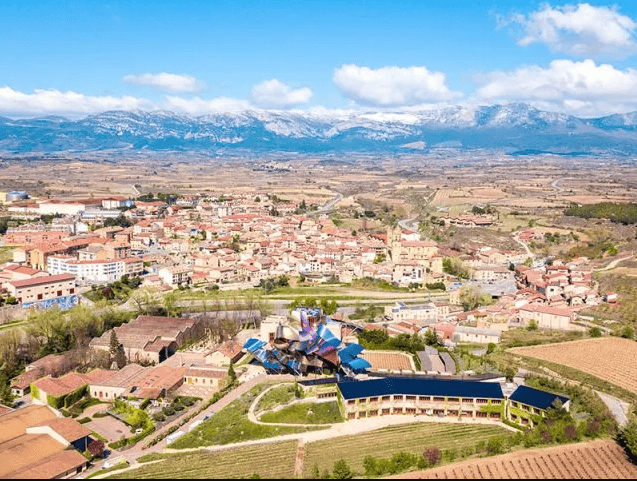

Una de las mejores gastronomías del mundo, playas rodeadas de naturaleza, ejemplos de arquitectura de vanguardia y una cultura única.
Esta zona del norte de España es perfecta para una visita de lo más completa. Si vas al País Vasco tienes que degustar sus famosos “pintxos”: delicias de alta cocina en miniatura que verás expuestas en multitud de bares. Además, hallarás diversos restaurantes de algunos de los grandes chefs de la nueva cocina española. Y para degustar deliciosos vinos, prueba en la zona conocida como Rioja Alavesa.
Araba-Álava (Provincia)
Se sitúa al norte de España, en el sur del País Vasco, del que es la provincia más extensa. La capital es la ciudad de Vitoria, capital también de la región.
En ella, está la Catedral gótica de Santa María de Vitoria, imprescindible, sobre todo ahora que la visita tiene lugar mientras se observan los trabajos de restauración. En el mes de agosto, celebra las fiestas populares de la Virgen Blanca.

Gipuzkoa (Provincia)
Se sitúa en el País Vasco, al norte de España. A lo largo de su litoral, que forma parte de la Costa Vasca, se encuentran espectaculares playas pertenecientes al mar Cantábrico y las curiosas formaciones geológicas de los acantilados de Deba y Zumaia.
Una de las imágenes más conocidas de esta zona es la bahía de La Concha de su capital, Donostia-San Sebastián, ciudad que combina edificios señoriales con arquitectura moderna reflejada en edificios como su Palacio Kursaal, donde se celebra el famoso Festival Internacional de Cine de San Sebastián. También en el litoral, el viajero puede conocer villas costeras con atractivos culturales como Zarautz, Getaria, Mutriku u Hondarribia.
Bizkaia (Provincia)
Se sitúa en el País Vasco, al norte de España. Destaca su capital, Bilbao, convertida en un emblema de la arquitectura contemporánea gracias a sus vanguardistas construcciones como el Museo Guggenheim Bilbao.
Vizcaya es el territorio más densamente poblado del País Vasco y en él se pueden encontrar tanto ciudades como zonas que conservan su carácter rural. También hay localidades de interior con un importante patrimonio como, por ejemplo, Durango, Elorrio, Otxandio, Orduña y Balmaseda.